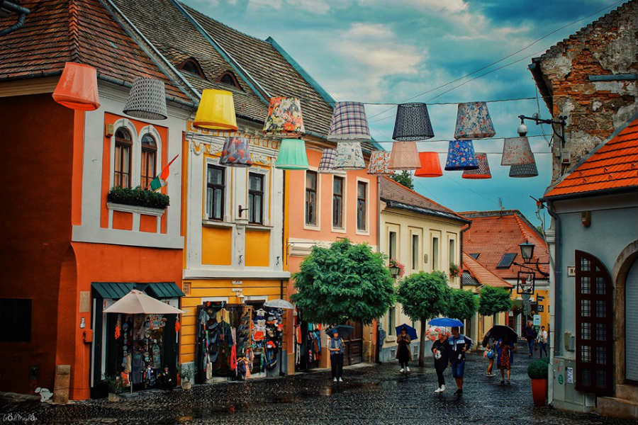
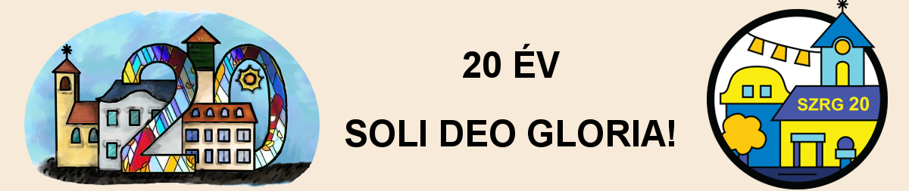
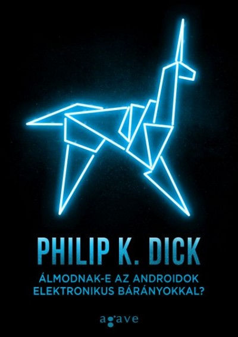
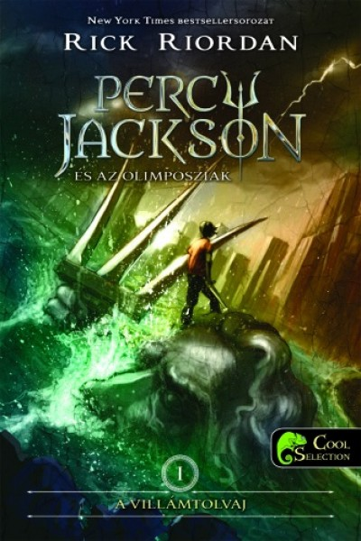
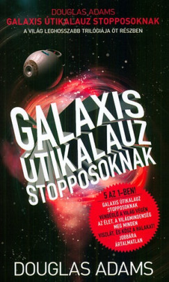
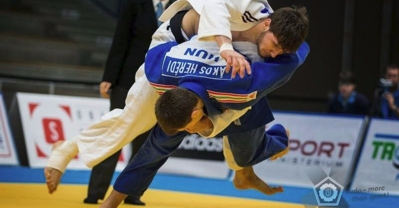

Zeller András Marcell-Portfólió
Kezdőlap
Rólam
Elérhetőségek
Korai évek |
Iskolai évek |
Gépészet |
Projektmunkák |
Hobbik |
Korai évek
Budapesten születtem, de egész életemben Szentendrén laktam. Mivel mindkét szülőm a fővárosban dolgozott, ezért evidens volt, hogy Óvodába is ott iratnak be. A logikus gondolkodás és a számok iránti rajongásom már ekkor megmutatkozott, köszönhetően a nagymamámnak, aki már 3 éves koromtól tanított számolni, olvasni és írni.
Ennek
köszönhetően nagyon gyorsan kialakult bennem a logikus és a
kritikus gondolkodás. Hamar megtanultam, hogy a körüttem lévő világ
megértéséhez a miért kérdésen át vezet az út. Így hamar érdeklődő és
nyitott lettem. Óvodában indultam a Bendegúz versenyen, ami egy
általános késségfelmérő verseny volt. Ezen ezüst minősítést kaptam, ami
csak méginkább ráébresztett, hogy fejlesztenem kell magam.

Iskolai évek
Mivel korábban sikeresen felvettek, az ötödik osztályt már a Szentendrei Református Gimnáziumban kezdtem. Hatalmas váltás volt, hiszen itt már olyan emberekkel voltam körülvéve, akik hasonlóan érdeklődők, mint én és ez elképesztően motiválóan hatott rám. Bekerültem a haladó Matekcsoportba, valamint új, komolyabb versenylehetőségek nyíltak meg előttem. Abban a szerencsés helyzetben volt részem, hogy a Matek tanárom egyben az Osztályfőnököm volt, aki szintén rajongott a Tudományért. Ennek köszönhetően egyre jobban teljesítettem. Később a Kémia, Fizika, Biológia tárgyak megjelenésével kinyílt előttem a világ.
Mire elértem a kilencedik osztályt, már volt országos Kémia verseny eredményem is, kissebb-nagyobb Fizika és Biológia eredményekkel. Ekkoriban az Orvosi hivatás iránt érdeklődtem, de végül Matematika, Fizika és Informatika Fakultációt választottam, mert rájöttem, hogy ilyen érdeklődési körrel a Mérnöki pálya az igazán nekem való. Tizenegyedik és tizenkettedik osztályban a Matematika OKTV második fordulójáig jutottam, Bolyai Matematika versenyen Megyei 2. helyezésig, valamint több Fizika és Matek versenyen is kimagasló eredményeket sikerült elérnem Megyei és Országos szinten is. Pénzügyi versenyeken is kipróbáltam magam.A CasePénz versenyen csapatom az Országos 2. helyezést szerezte meg.

Gépészet
Egész gyermekkoromban általános volt, hogy hétvégén Apámmal autót szereltünk, vagy sajátot, vagy barátét.Egyre jobban kezdett érdekelni az alkatrészek működése, funkciója. Emiatt egyre többet kérdezgettem szerelés közben. Elkezdtem utánaolvasni különböző szerkezetek működésének, valamint ha kellett,megtanultam a fizikáját. Mire tizenegyedikes lettem, már volt, hogy saját magam cseréltem ki egy-egy alkatrészt az otthaoni gépekben. A leselejtezett gépeket szétszedtem, megvizsgáltam, hogy megértsem. Végül rájöttem, hogy ha ezt szeretném csinálni (márpedig ezt szeretném), akkor a Gépészmérnöki pálya a nekem való.
Az Egyetem kezdetén még nem igazán tudtam merre akarok specializálódni, de ahogy elkezdtünk modellezni, tervezni és létrehozni a különböző alkatrészeket, egyből tudtam, hogy én nem épületgépész, vagy egyéb akarok lenni, hanem a Géptervező irányt, vagy esetleg Gépfejlesztő irányt kell választanom.

Hobbik

Az olvasás mellett a Sport is fontos része az életemnek. 4 évesen kezdtem el Judózni és egészen érettségi időszakig rendszeresen jártam edzésekre. Emellett kajakoztam pár évig, kosaraztam 4 évig általánosban, valamint kipróbáltam magam fociban és ping-pong-ban is. A Judo mellett más küzdősportok iránt is érdeklődtem. Így kipróbálhattam a botharcot is, amit nagyon meg is szerettem, noha csak egy vizsgát sikerült letennem. De semelyik sportot sem találtam annyira nekem valónak mint a Judót. Azonban most Egyetem mellett csak kondira van időm, valamint saját súlyos edzésekre.
